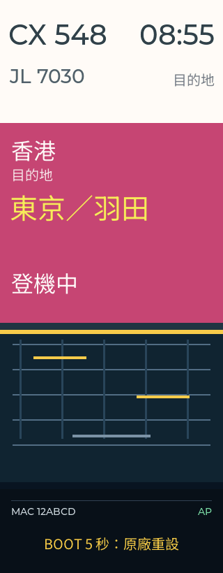
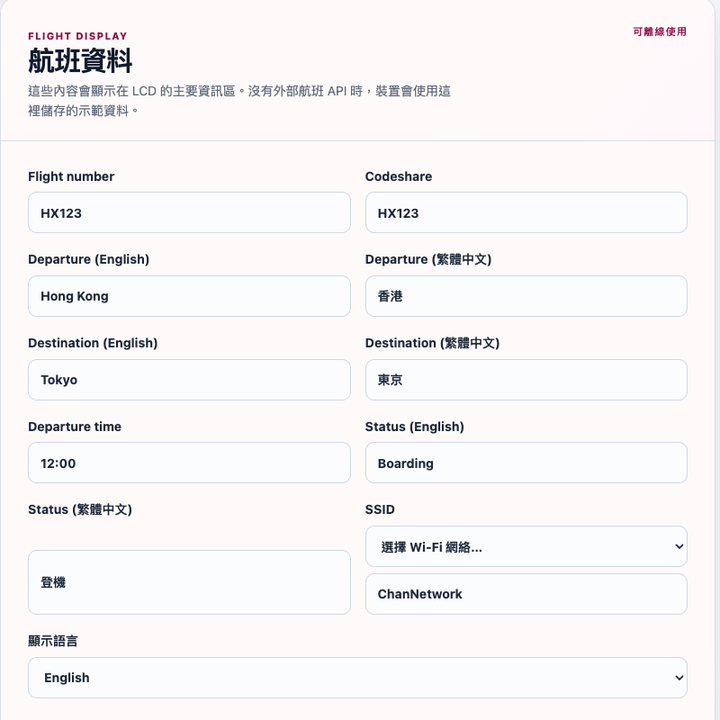

快速上手：四個步驟
- 接通電源並開機以 USB-C 5V 供電，打開機側電源開關。螢幕會先熄滅片刻，數秒後亮起並顯示示範航班。
- 查看螢幕底部記下 MAC 後面的 6 位英數；所有密碼均為 HK- 加上這 6 位。
- 連接裝置熱點在手機的 Wi-Fi 清單中選擇
AirportDisplay-XXXX（XXXX 為螢幕 MAC 的後 4 位），密碼為HK-XXXXXX。 - 開啟控制台在瀏覽器輸入
http://192.168.4.1/；出現登入視窗時，帳號輸入admin，密碼輸入HK-XXXXXX。
水牌會自行開啟 Wi-Fi 熱點，無需互聯網即可完成設定。瀏覽器可能顯示「不安全」警告，原因是裝置使用本機 HTTP 網頁，屬正常情況。
設定一次即可。日後每次開機，水牌都會沿用已儲存的航班資料與背景圖片，離線時仍可正常顯示。
螢幕內容說明

1 2 3 4 5 6 71航班編號（例：CX 548）
2出發時間（24 小時制）
3代碼共享航班（可留空）
4出發地
5目的地（大字、黃色）
6登機狀態（例：登機中）
7系統帶：MAC、網絡狀態與 BOOT 提示
系統帶說明
AP：水牌正在廣播自身熱點，等待連線設定。STA 192.168.x.x：水牌已連接您的 Wi-Fi，並顯示其 IP 位址。- 中間的圖案為可更換的背景圖片，出廠時為預設圖。
未進行任何設定前，水牌顯示內建示範資料：CX 548 · 08:55 · JL 7030 · 香港 → 東京羽田 · 登機中。
控制台：航班資料
登入後，控制台分為五個區域：航班資料、Wi-Fi 設定、背景圖片、OTA／維護、登入設定。
| 欄位 | 填寫內容 |
|---|---|
| Flight number 航班編號 | 例：CX 548 |
| Codeshare 代碼共享 | 例：JL 7030，沒有可留空 |
| Departure 出發地 | 英文、繁中、簡中各一格 |
| Destination 目的地 | 英文、繁中、簡中各一格 |
| Departure time 出發時間 | 24 小時制，例：08:55 |
| Status 狀態 | 例：登機中 / Boarding |
| 顯示語言 | 繁體中文、简体中文或 English，選擇後即時生效 |
修改後請按 「儲存航班設定」，螢幕會即時更新。
裝置未連接外部航班 API，會直接顯示您填寫的內容，因此可填入自己的航班、朋友的航班，甚至自訂一班「登機中」。
顯示語言一經更改即時套用：螢幕與控制台會同時切換為繁體中文、简体中文或 English。
背景圖片 · Wi-Fi · 登入設定
背景圖片
選擇一個 PNG 或 JPEG，以「水平位置／垂直位置」滑桿移動裁切範圍，然後按 「上載背景圖片」。裝置會自動裁切為 320×212，預覽即為實際效果。
Wi-Fi 設定（可選）
可讓水牌連接您的 Wi-Fi（僅支援 2.4GHz）。設定後螢幕會顯示 STA 與 IP，您可直接以該 IP 開啟控制台。
- 密碼留空＝不變更現有網絡。
- 勾選「清除已儲存 Wi-Fi」＝回復僅熱點模式。
- 即使不連接 Wi-Fi，水牌仍可正常運作。
登入設定
可更改控制台帳號與密碼（最少 8 個字元）。儲存後請以新帳號重新登入。

手機或電腦上的控制台（航班資料頁）
維護與復原
恢復原廠設定
按住機側 BOOT 約 5 秒（螢幕底部會顯示 BOOT 提示），放開後裝置會重新啟動。航班資料、Wi-Fi、背景圖片與登入帳號將全部清除，並回復出廠示範資料。
下載模式（維修／重新刷機用）
按住 BOOT，按一下 RST，然後放開 BOOT，裝置便會進入下載模式。
OTA 韌體更新（進階）
先短按並放開 BOOT 以完成授權（授權有效期 120 秒），然後在「維護工具」上載同型號的 .bin 檔案。
警告：上載錯誤檔案會導致水牌無法開機。如不清楚操作內容，請勿自行更新，並於市集現場尋求協助。
如需使用電腦重新刷機，請參閱封底的 flash station 網址與 QR code。
常見問題
- 無法連接 AirportDisplay-XXXX？
- 請靠近水牌，確認手機使用 2.4GHz、關閉 VPN，然後重新開機再試一次。
- 忘記控制台密碼？
- 請查看螢幕底部的 MAC 後 6 位，密碼即為
HK-加上這 6 位。如曾更改而忘記，請執行一次原廠重設。 - 輸入 192.168.4.1 沒有反應？
- 請確認手機仍連接水牌的熱點，不要切換至流動數據。
- 修改設定後螢幕沒有變化？
- 請按「儲存航班設定」；背景圖片需等待上載完成後才會套用。
- 上載背景圖片失敗？
- 僅支援 PNG 或 JPEG。裝置會自動裁切為 320×212，建議使用橫向構圖。
- 螢幕沒有畫面？
- 請檢查電源開關與 USB-C 線，並重新開機一次；若仍未顯示，則需要維修。
- 中文無法顯示？
- 內建繁體與簡體中文字型。若個別字元顯示為方格，請改用其他語言或常見字詞。
- 可以用 5GHz Wi-Fi 嗎？
- 不可以。水牌只支援 2.4GHz；路由器同時廣播兩個頻段時，請選擇 2.4GHz 的那一個。
規格
| 螢幕 | 3.16 吋 LCD，320 × 820 直向，550 cd/m² |
| 處理器 | ESP32-S3R8（雙核心，240MHz） |
| 記憶體 | 16MB Flash ／ 8MB PSRAM |
| 無線 | Wi-Fi 2.4GHz（802.11 b/g/n）、藍牙 5 LE |
| 供電 | USB-C 5V（不含火牛） |
| 背景圖 | PNG／JPEG，自動裁成 320 × 212 |
| 語言／韌體 | 繁中、簡中、English ／ 1.1.2（2026-09） |